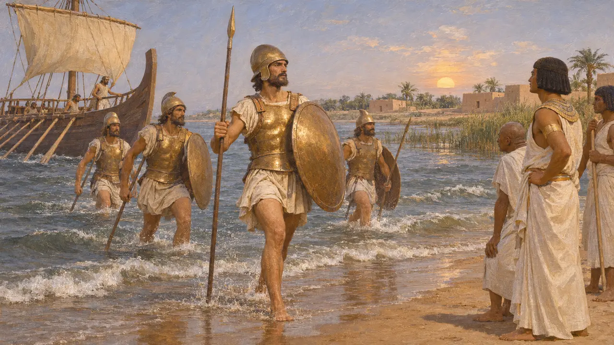
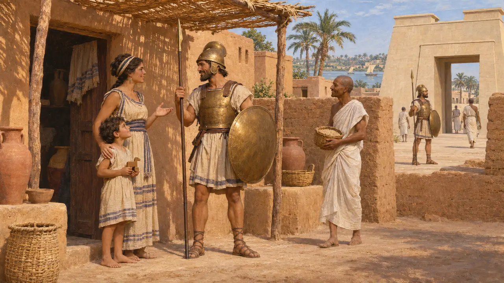
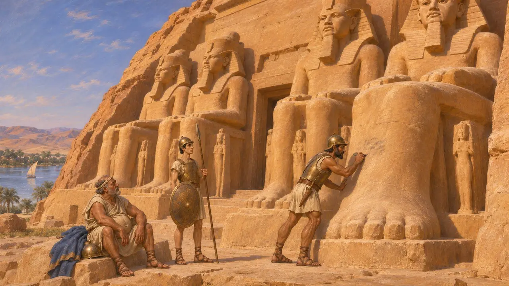
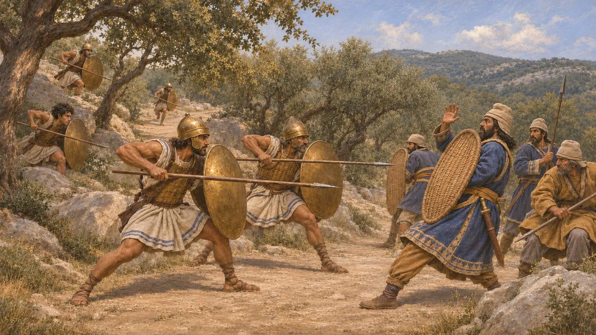
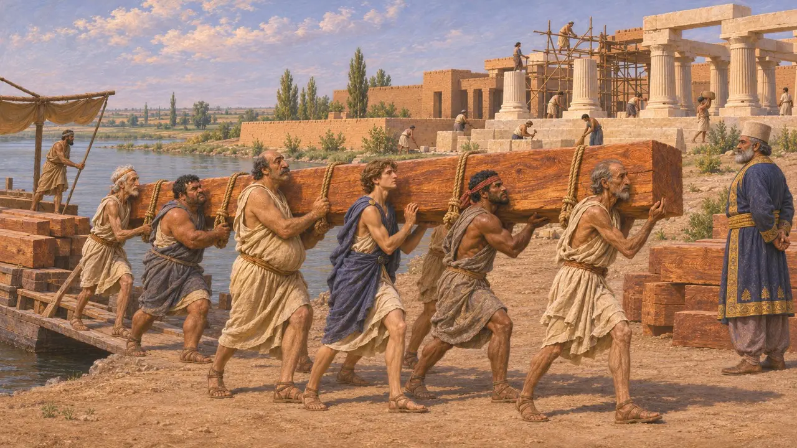

Encyclopedia › Soldiers and ships

Carian Mercenary
Carian soldiers hired by Egypt's kings and at war with Persia, about 664-494 BCE
Carians came from the hill country of south-western Asia Minor. Greek tradition remembered them as early makers of shield gear and as soldiers for hire. Egyptian kings kept Carian and Ionian troops for well over a century, and those troops faced the Persians at Pelusium in 525. Yet Carians also rowed, carried timber and laboured for the Persian King, so they stood on both sides of the empire's wars.
In the game: The Carian Mercenary is armoured hired foot of the King's enemies, with a label that changes by level. It holds against spearmen and riders, and archers wear it down. This simplifies history: Carians also served the King.

The bronze men from the sea
Later legendHerodotus tells how an oracle promised the exiled Egyptian prince Psammetichus revenge when bronze men came out of the sea. Ionian and Carian raiders in bronze armour then landed in Egypt, and Psammetichus hired them and won the throne with their help. The story is shaped as a fulfilled prophecy and should not be read as a plain report.
Herodotus 2.152

Settled soldiers of the pharaohs
Ancient accountHerodotus says Psammetichus gave his Ionian and Carian troops land on either side of the Pelusiac branch of the Nile, at a place called the Camps. A later king, Amasis, moved them to Memphis to serve as his guard against his own Egyptians. Their descendants formed a lasting community there, which later Greek writers called the Caromemphites.
Herodotus 2.154

Carian writing on Egyptian stone
In the recordCarian soldiers left graffiti on the colossal statues at Abu Simbel, probably during Psamtik II's campaign into Nubia in the early 6th century. Funerary stelae from Saqqara near Memphis, some with Egyptian scenes and Carian texts, show mercenary families settled and buried in Egypt. These texts from Egypt, together with a bilingual found at Kaunos in Caria, helped scholars decipher the Carian script in recent decades.
I.-J. Adiego, The Carian Language, 2007

Fighting the Persians
Ancient accountHerodotus says that at Pelusium in 525 the Greek and Carian mercenaries of Psamtik III killed the sons of Phanes, who had deserted to Cambyses, before the armies met. In the Ionian Revolt the Carians fought for themselves, not for pay. They lost to Persian forces on the Marsyas river and at Labraunda, then ambushed a Persian army on the road to Pedasus and killed its commanders, Daurises among them.
Herodotus 3.11; Herodotus 5.117-121

Carians in the King's service
In the recordDarius's foundation charter at Susa names Carians and Ionians as the men who carried cedar timber from Babylon to Susa for his palace. Babylonian documents show a community of Carians at Borsippa, probably settled there under the Babylonian kings, and still recorded under the early Persian kings. Carians were subjects of the King as well as his enemies.
DSf; C. Waerzeggers, The Carians of Borsippa, Iraq 68, 2006
Sources
- Herodotus 2.152-154
- Herodotus 3.11
- Herodotus 5.117-121
- DSf
- I.-J. Adiego, The Carian Language, 2007
- C. Waerzeggers, The Carians of Borsippa, Iraq 68, 2006